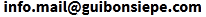

Contact: 
Studied information design at the hfg ulm (Hochschule für Gestaltung Ulm, Germany) (1955-1959). Since 1968 designer and consultant for industrialization policy in Latin America (Chile, Argentina, Brazil). 1987-1989 specialization in interface design in a software house in California. 1993-2003 professor for interface design at the University of Applied Sciences, Cologne. Lives and works in Brazil and Argentina.
Estudió diseño de información en la hfg ulm, Alemania (1955-1959). Actividad en el área de desarrollo, investigación y enseñanza hasta el cierre de la universidad. Desde 1968 diseñador y consultor en el área de política industrial en América Latina (Chile, Argentina, Brasil). 1981-1983 especialización en interface design en un software house en California. 1993-2003 catedrático para interface design en la Universidad de Ciencias Aplicadas en Colonia. Vive y trabaja en Brasil y Argentina.
Studium an der Hochschule für Gestaltung Ulm (Abt. Information) (1955-1959). Lehr- und Entwicklungstätigkeit an der HfG bis 1968. Seit 1968 Design- und Beratertätigkeit im Bereich der Entwicklungs- und Industrialisierungspolitik in Lateinamerika (Chile, Argentinien, Brasilien). 1987 bis 1989 Softwaredesign in einem Softwarehouse in Kalifornien, Spezialisierung auf Interface Design. Von 1993-2003 Professor für Interaktive Medien an der FH Köln. Lebt in Brasilien und Argentinien.